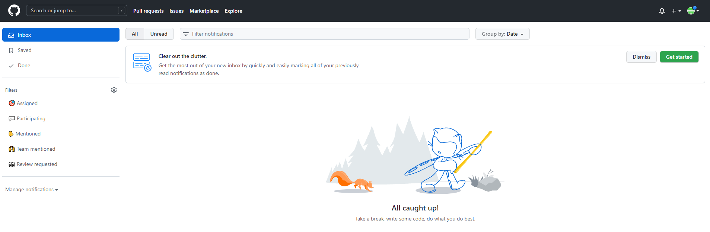

Notifications – это уведомления от сайта GitHub,
такие, как – новости, сообщения о подозрительном входе с другого устройства,
сообщения о том, что другой github-пользователь добавил вас коллаборатором в свой проект и так далее.
Если вы сразу после создания аккаунта наведете курсор на эту иконку, то скорее всего, получите такое же сообщение, как и я:
«You have no unread notifications»
И в самом деле, о чем вам сообщать, вы же еще ничего не сделали
А если вы нажмете на эту кнопку, то вам откроется страница, очень похожая на почтовый ящик. Так и есть! У GitHub-а есть своя внутренняя почта:

Как видим, и в этой почте, никаких сообщений нет .
Но присмотритесь, вам не зря советуют:
Take a break, write some code, do what you do best
Начните писать код, и от сообщений не будет отбоя .
Но чтобы начать писать код, надо покончить с этим нуднейшим упражнением. Поэтому – немедленно к следующей кнопке!